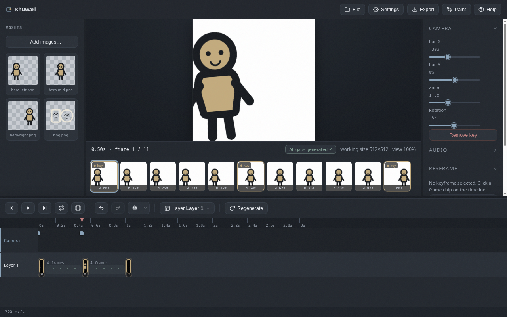

Camera
Non-destructive pan, zoom and rotation for the whole frame, keyframed on their own track.
What it is
The camera applies a pan, zoom and rotation to the whole frame, on top of your layers. It is non-destructive - your keyframes are never changed - and it is applied to the preview and to exports alike.

Add a camera key
Open the Camera panel at the top of the right panel and move to the moment you want.
- Move the playhead to where the change should start.
- Drag any of the Pan X, Pan Y, Zoom or Rotation sliders.
- A camera key appears at the playhead. The first key is remembered for the whole timeline, so the pose holds before your camera moves.
You can also press Add key to stamp a key with the current values when you want the pose to stay readable.
The Camera track
The timeline has a Camera row under your layers. Each key is a small dot:
- Drag a dot to retime it.
- Double-click a dot to remove that key.
- With the playhead on a key you can nudge the sliders to edit it, or press
Remove key.
Between keys
The camera values blend smoothly from key to key, so a slow push-in is just two keys: one at normal zoom, a later one zoomed in. Space your keys on the timeline to shape the easing of the movement.
Applied to exports
The camera is part of the final composite, so every exported frame includes it. Combine it freely with squash, motion blur and color layers exactly like the rest of the frame.